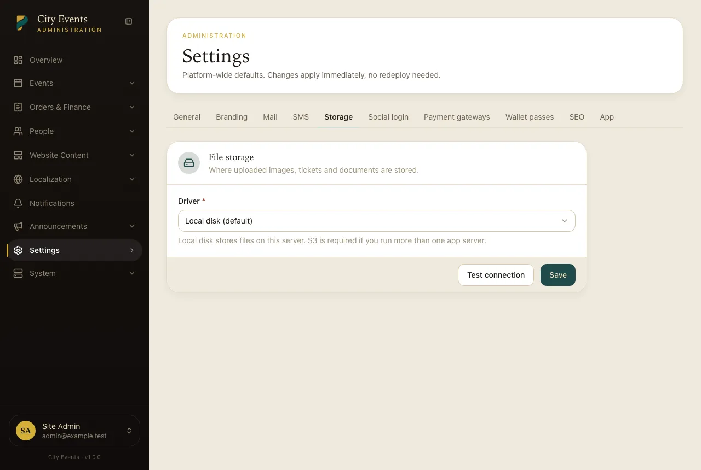

Storage & S3
Local disk out of the box, S3 when you need to scale media off the server.
Event covers, organizer logos, branding assets, and generated ticket PDFs all go through Laravel's filesystem abstraction, so switching between local disk and S3 doesn't change how anything in the app behaves.

Local disk (default)
Files are stored under storage/app/public and served via the
storage:link symlink the installer creates automatically. No further setup — this is
what a fresh install uses unless you choose S3 during the wizard's Storage step.
Switching to S3
From Admin → Settings → Storage (or during the install wizard's Storage step), switch the driver to S3 and provide:
| Field | Notes |
|---|---|
| Access key / secret | An IAM user scoped to just this bucket is safer than reusing broad account credentials. |
| Region | e.g. us-east-1 |
| Bucket | Must already exist — the app doesn't create it for you. |
| Endpoint / URL | Optional — only needed for an S3-compatible provider (DigitalOcean Spaces, Cloudflare R2, MinIO) instead of AWS itself. |
Use the "test storage" button on that screen before saving — it writes, reads, and deletes a temp object, so a bad key/bucket/permission combination is caught immediately instead of failing silently on the next real upload.
Bucket policy for S3
Uploaded media (event covers, logos, branding assets) needs to be publicly readable for the site to display it. Ticket PDFs are different: they're written to the same disk but only ever served through an authenticated API route that streams the file through the app after checking the requester actually owns the order — so the bucket doesn't need to allow public reads for ticket delivery to work, and a stored PDF isn't reachable by guessing its URL.